LE RADICI E I RAMI
Genealogia Gli antenati e i discendenti di Giovanni Martinelli .
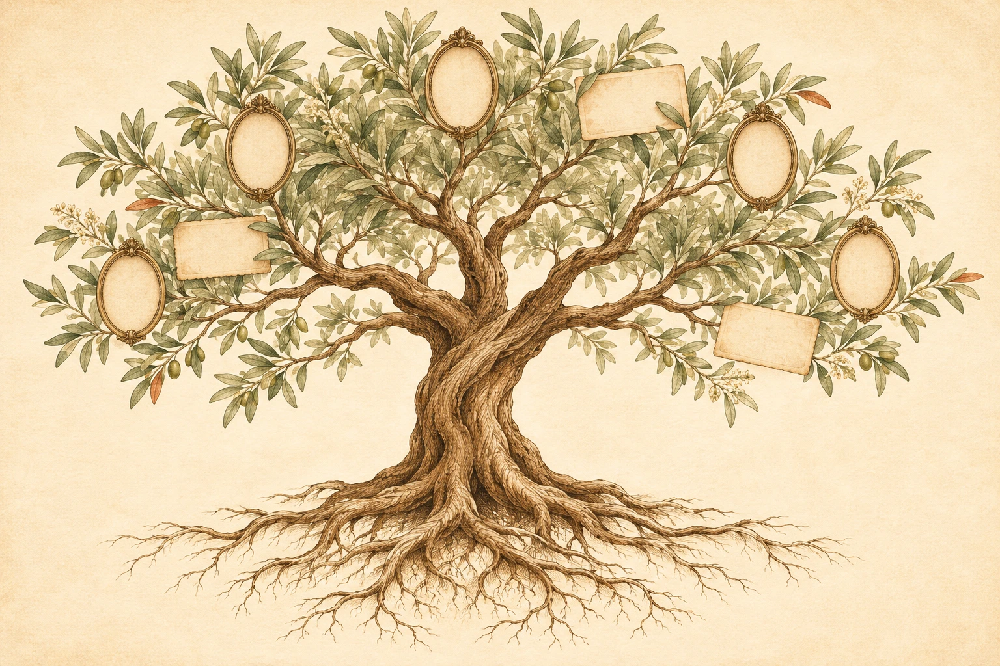
Radici e rami · illustrazione evocativa − 100% + Tutto l’albero Giovanni Schermo intero
Trascina per spostarti; usa + e − o due dita per ingrandire. Tocca una persona per leggere la scheda. Da tastiera: frecce per spostarti, + e − per lo zoom.
I VOLTI DELLA FAMIGLIA
Ritratti e schede di famiglia 70 ritratti identificati, raccolti dalle cartelle di famiglia. Le date provengono dall’albero familiare completo e dalle schede MyHeritage verificate; quando mancano non vengono ricostruite. Le date con anno a due cifre restano come nel documento. Per gli omonimi controlla le date nella scheda.
Cerca una persona RaccoltaTutte le raccolte Albero familiare Antenati Martinelli Martucci Mazzi Tortora
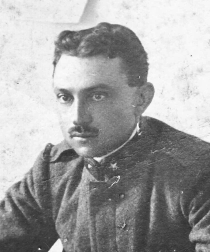
Adelino Mazzi Nascita: data non indicata Apri la scheda → Alberta Mazzi Nascita: 20 settembre 1996 Apri la scheda → 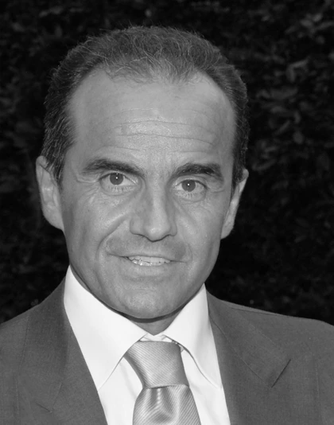
Alberto Mazzi Nascita: 1 ottobre 1963 Apri la scheda → Alberto Mazzi Nascita: 3 febbraio 1991 Apri la scheda → Foto non disponibile Alessandra Corbelli Nascita: data non indicata Apri la scheda → Foto non disponibile Alessandra Pace Nascita: 4 agosto 1981 Luogo di nascita: Reggio Calabria Apri la scheda → Alessandro Fortuna Nascita: 4 marzo 1994 Apri la scheda → Alessandro Mazzi Nascita: 3 febbraio 1991 Apri la scheda → 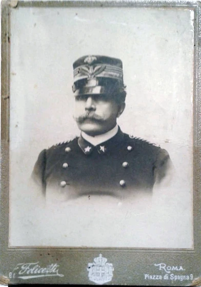
Alfredo Martinelli Nascita: data non indicata Apri la scheda → Alice Fortuna Nascita: 11 aprile 1997 Apri la scheda → 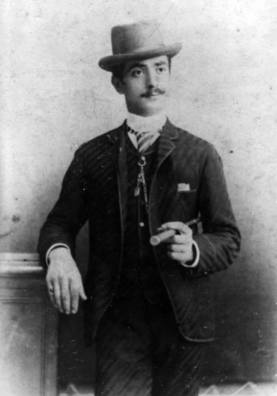
Amedeo Masoni Nascita: data non indicata Apri la scheda → Foto non disponibile Andrea Martinelli Nascita: 17 dicembre 1985 Apri la scheda → Andrea Mecozzi Nascita: data non indicata Apri la scheda → Andrea Tortora Nascita: 29/5/58 Apri la scheda → Anna Carolina Tortora Nascita: 30/9/77 Apri la scheda → 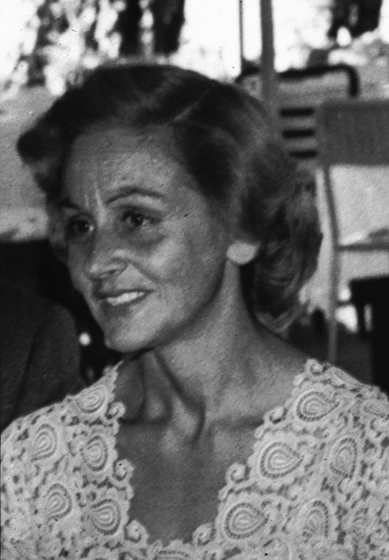
Annamaria Martinelli Mannina · Anna Nascita: data non indicata Apri la scheda → Foto non disponibile Antonella Polimeni Nascita: 23 giugno 1978 Luogo di nascita: Belluno Apri la scheda → Foto non disponibile Benedetta Noja Nascita: data non indicata Morte: 1830 Apri la scheda → Camilla Galletti Nascita: data non indicata Apri la scheda → Camilla Mazzi Cami Nascita: 16 settembre 1993 Apri la scheda → Carla Tomatis Nascita: 30 agosto 1964 Apri la scheda → Foto non disponibile Carlo Benini Martinelli Nascita: 20 ottobre 2010 Apri la scheda → Carlo Martucci Nascita: 14 gennaio 1914 Morte: marzo 1986 Apri la scheda → Foto non disponibile Clemente Maria Martinelli Nascita: 1778 Morte: 1836 Apri la scheda → Foto non disponibile Clemente Martinelli Nascita: 1711 Morte: 1780 Apri la scheda → Foto non disponibile Costanza Tortora Nascita: 9 gennaio 1987 Apri la scheda → Foto non disponibile Davide Tortora Nascita: 25/9/93 Apri la scheda → Foto non disponibile Edoardo Martinelli Nascita: 26 gennaio 1982 Apri la scheda → Foto non disponibile Eleonora Indelli Nascita: data non indicata Apri la scheda → Elisabetta Leoni Elisabetta Galletti Nascita: 14 febbraio 1976 Luogo di nascita: Prato Apri la scheda → 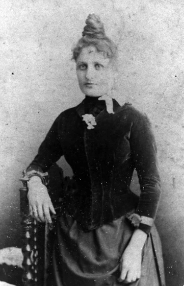
Emilia Conti Nascita: data non indicata Apri la scheda → Enrico Calenda Nascita: 17/12/1914 Morte: 25/08/1941 Apri la scheda → Enrico Martinelli Nascita: data non indicata Morte: 18 aprile 2017 Apri la scheda → Eros Mazzi Nascita: gennaio 1925 Morte: 28 ottobre 1994 Apri la scheda → 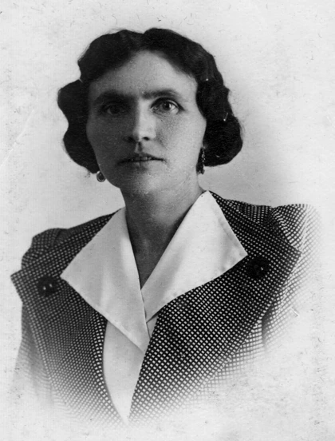
Ester Barlottini Nascita: data non indicata Apri la scheda → Fabio Colussi Nascita: data non indicata Apri la scheda → Federico Martinelli Nascita: 26 marzo 1983 Apri la scheda → Federico Mazzi Nascita: 30 agosto 1993 Apri la scheda → Felice Bonavolontà Nascita: data non indicata Apri la scheda → Foto non disponibile Flavia Mecozzi Nascita: 11/10/2016 Apri la scheda → Foto non disponibile Francesca Antonacci Nascita: data non indicata Morte: 4 aprile 1875 Apri la scheda → Francesca Romana Colussi Nascita: 01/04/1973 Apri la scheda → Foto non disponibile Francesco Paolo Martinelli Nascita: 12 marzo 1803 Morte: 4 gennaio 1885 Apri la scheda → Foto non disponibile Francesco Paolo Martinelli Nascita: 1755 Morte: 1818 Apri la scheda → Francesco Paolo Mazzi Chicchi Nascita: 29 novembre 1989 Apri la scheda → Foto non disponibile Gaia Lainez Nascita: 19/08/2018 Apri la scheda → Giacomo Galletti Nascita: 25 febbraio 1972 Luogo di nascita: Verona Apri la scheda → Foto non disponibile Giacomo Tortora Nascita: 28 gennaio 1977 Apri la scheda → Gianni Fortuna Nascita: 8 aprile 1959 Apri la scheda → Giovanna Limone Nascita: 5 aprile 1953 Apri la scheda → Foto non disponibile Giovanna Recchia Nascita: 1 luglio 1959 Apri la scheda → 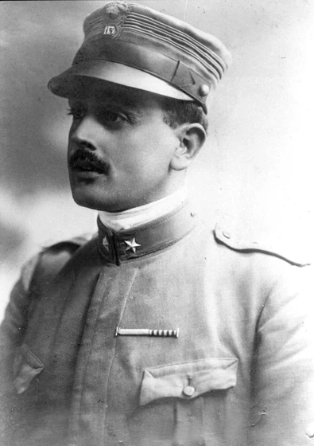
Giovanni Martinelli Nascita: 23 giugno 1882 Apri la scheda → Giulia Bolla Nascita: 12 febbraio 1964 Apri la scheda → Giulia Fortuna Nascita: 29 giugno 1992 Apri la scheda → Foto non disponibile Giuseppe Mauro Nascita: 2 marzo 1978 Luogo di nascita: Verona Apri la scheda → Grazia Martinelli Graziella Nascita: 24 giugno 1930 Apri la scheda → Ines Ardoino Nascita: 28 settembre 1921 Apri la scheda → Foto non disponibile Jacopo Tortora Nascita: 3/4/86 Apri la scheda → Laura Emilia Tortora Nascita: 5/11/85 Apri la scheda → 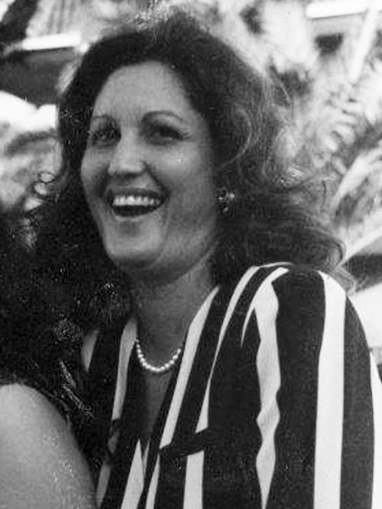
Laura Uribe Nascita: 10/11/52 Apri la scheda → 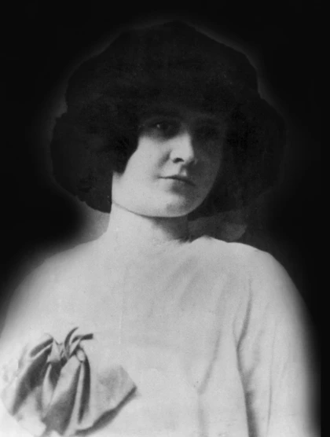
Lina Masoni Nascita: data non indicata Apri la scheda → Loletta Calenda Loletta Tortora Nascita: 20/08/1941 Apri la scheda → Luca Scuriatti Nascita: 2/10/73 Apri la scheda → Lucia Inviso Nascita: 5/4/58 Apri la scheda → Ludovica Colussi Nascita: 26/05/1977 Apri la scheda → Foto non disponibile Marcella Tortora Nascita: 13/2/80 Apri la scheda → Marcello Galletti Nascita: 27 gennaio 1975 Luogo di nascita: Verona Apri la scheda → Marcello Tortora Nascita: 8/7/54 Morte: 11/5/97 Apri la scheda → Margherita Mazzi Maggie Nascita: 3 luglio 1997 Apri la scheda → Maria Beatrice Tortora Beatrice Nascita: 1 ottobre 1975 Apri la scheda → 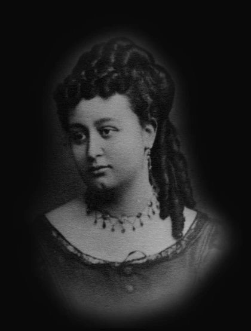
Marianna Antonelli Nascita: data non indicata Apri la scheda → Mario Tortora Nascita: data non indicata Apri la scheda → 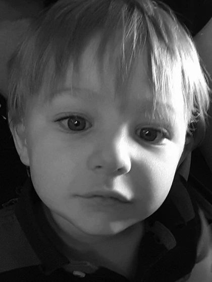
Matteo Mauro Scuriatti Nascita: 7/10/17 Apri la scheda → Foto non disponibile Mia Benini Martinelli Nascita: 30 marzo 2012 Apri la scheda → Foto non disponibile Mila Lainez Nascita: 06/02/2017 Apri la scheda → Milo Mazzi Nascita: 16 novembre 2006 Apri la scheda → Foto non disponibile Nacho Lainez Nascita: data non indicata Apri la scheda → Niccolò Tortora Nascita: 30/5/95 Apri la scheda → Nicola Mauro Nascita: data non indicata Apri la scheda → Paola Martinelli Nascita: data non indicata Apri la scheda → 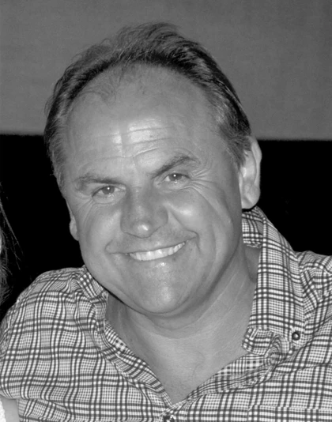
Paolo Mazzi Nascita: 1959 Apri la scheda → Patrizia Martucci Pucci Nascita: data non indicata Apri la scheda → Foto non disponibile Piera Dabizi Nascita: 17 luglio 1972 Luogo di nascita: Prato Apri la scheda → Pietro Giovanni Martinelli Pigi · Piergiovanni Nascita: 6 dicembre 1953 Apri la scheda → Foto non disponibile Riccardo Mauro Nascita: 23 novembre 1979 Luogo di nascita: Verona Apri la scheda → Rita Colantonio Nascita: 24 febbraio 1964 Apri la scheda → Roberto Martinelli Nascita: data non indicata Apri la scheda → Foto non disponibile Rosa Pizzingroia Nascita: data non indicata Apri la scheda → Rossella Martucci Nascita: data non indicata Apri la scheda → Sante Martinelli Nascita: 13 febbraio 1922 Morte: 17 novembre 1995 Apri la scheda → 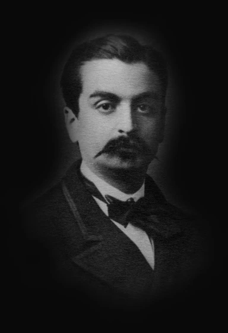
Sante Martinelli Nascita: 2 aprile 1865 Apri la scheda → 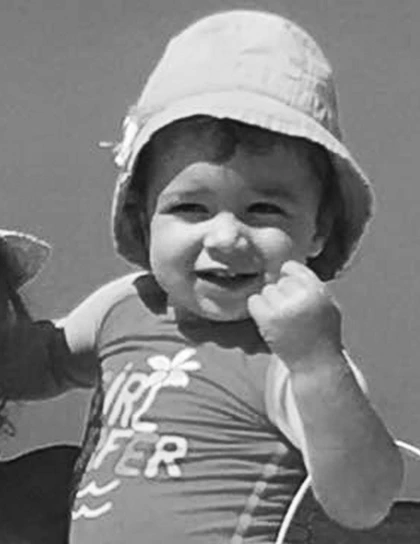
Sara Bonavolontà Martinelli Nascita: 20 ottobre 2016 Apri la scheda → Foto non disponibile Stefano Benini Nascita: 15 dicembre 1964 Apri la scheda → Stefano Mazzi Nascita: 10 luglio 1957 Apri la scheda → Stefano Tortora Nascita: 4 dicembre 1951 Apri la scheda → Susanna Martucci Nascita: 31 marzo 1958 Apri la scheda → Tiziana Alvari Nascita: data non indicata Apri la scheda → Tullo Galletti Nascita: data non indicata Apri la scheda → Foto non disponibile Valentina Martinelli Nascita: 9 ottobre 1978 Apri la scheda → Vera Martinelli Nascita: 1921 Morte: 2020 Apri la scheda → Le fotografie sono quelle dell’archivio, senza ricostruzioni dei volti. La raccolta comprende anche persone non presenti nelle due viste interattive precedenti; non sono stati aggiunti collegamenti di parentela non documentati.
Consulta l’albero familiare completo utilizzato come fonte ↗